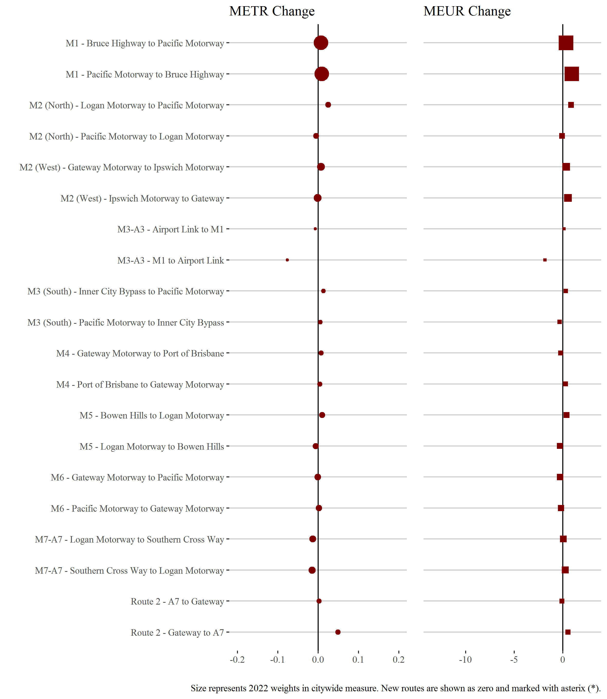

Congestion Report 2022
Congestion Report 2022Brisbane
Note: Shape size denotes 2022 weights in city-wide measures.
Most routes exhibited little change in travel time congestion between 2021 and 2022. The major exception is the lightly-weighted M3-A3, where travel time congestion declined significantly in the southbound direction (i.e. M1 to Airport Link). Modest reductions in travel time congestion across many routes more than offset the slight increase on the highly-weighted M1 to produce a 2.5 per cent decline in the result city-wide mean excess time index.
Similarly, modest decreases in congestion uncertainty across a majority of motorway routes in Brisbane, between 2021 and 2022, more than offset increased uncertainty on the M1 to lead to city-wide falls.
Ratio of median travel time to best (shortest) travel time for each route.
M1 - Bruce Highway to Pacific Motorway / Pacific Motorway to Bruce Highway
This route extends from the Gympie Arterial Road (M3) at Bald Hills in the north of Brisbane to Eight Mile Plains in the south of Brisbane, crossing the Brisbane River near Eagle Farm. It encompasses most of the Gateway Motorway. It is a major intercity and interregional route through its connections with the Pacific Motorway and Bruce Highway. This route also connects to the M2, M3, M4, M6 and M7 (via Southern Cross Way) motorways also covered in this report.
| Direction | Shortest median travel time | Longest median travel time | METR | Smallest Uncertainty Range | Longest Uncertainty Range | MEUR | Route distance |
|---|---|---|---|---|---|---|---|
| Bruce Highway to Pacific Motorway | 00:23:54 | 00:30:36 | 1.046 | 00:01:48 | 00:13:43 | 2.120 | 37.7 |
| Pacific Motorway to Bruce Highway | 00:23:26 | 00:39:58 | 1.117 | 00:01:10 | 00:27:13 | 5.555 | 37.5 |
The best travel times and lowest uncertainty travelling from the Bruce Highway to the Pacific Motorway were at 2am and 8pm, respectively, with a median travel time of approximately 24 minutes and an interquartile range of around 2 minutes. The longest median travel times was around 30.5 minutes at 4pm and the greatest uncertainty was at 3pm with an interquartile range of just under 14 minutes.
The best travel times and lowest uncertainty travelling from the Pacific Motorway to the Bruce Highway were at midnight and 7pm, respectively, with a median travel time of around 23.5 minutes and an interquartile range of 70 seconds. The longest median travel times and greatest uncertainty were at 4pm with a median of 40 minutes and an interquartile range of around 27 minutes.
M2 (North) - Logan Motorway to Pacific Motorway / Pacific Motorway to Logan Motorway
This short (8 kilometre) route consists of the Gateway Motorway section of the M2 linking the M1 and the Logan Motorway at Drewvale in Southern Brisbane.
| Direction | Shortest median travel time | Longest median travel time | METR | Smallest Uncertainty Range | Longest Uncertainty Range | MEUR | Route distance |
|---|---|---|---|---|---|---|---|
| Logan Motorway to Pacific Motorway | 00:05:15 | 00:08:23 | 1.056 | 00:00:22 | 00:11:55 | 3.694 | 8.4 |
| Pacific Motorway to Logan Motorway | 00:05:09 | 00:05:27 | 1.018 | 00:00:22 | 00:00:50 | 1.413 | 8.3 |
The best median travel times and least uncertainty for journeys from the Logan Motorway to the Pacific Motorway were at 2am with a median travel time of around 5 minutes and an interquartile range of 22 seconds. The longest median travel times and greatest uncertainty were at 7am with a median of around 8 minutes and an interquartile range of around 12 minutes.
The best median travel times and lowest uncertainty for journeys from the Pacific Motorway to the Logan Motorway were at 5am with a median travel time of around 5 minutes and an interquartile range of 22 seconds. The longest median travel times was at 4pm with a median of 5.5 minutes and the greatest uncertainty was at 5pm with an interquartile range of 50 seconds.
M2 (West) - Gateway Motorway to Ipswich Motorway / Ipswich Motorway to Gateway
This route uses the Logan Motorway section of the M2 between its confluence with the Gateway Motorway (M2 North) and junction with the M7 (Ipswich Motorway) at Gailes. It crosses the M5 (Centenary Highway) at Carole Park.
| Direction | Shortest median travel time | Longest median travel time | METR | Smallest Uncertainty Range | Longest Uncertainty Range | MEUR | Route distance |
|---|---|---|---|---|---|---|---|
| Gateway Motorway to Ipswich Motorway | 00:10:16 | 00:13:26 | 1.053 | 00:00:51 | 00:07:33 | 2.467 | 16.1 |
| Ipswich Motorway to Gateway | 00:09:58 | 00:17:17 | 1.095 | 00:00:57 | 00:15:34 | 3.106 | 15.8 |
The best median travel times for journeys from the Gateway Motorway to Ipswich Motorway was around 10 minutes at 3am and the lowest uncertainty was at 3am with an interquartile range of 51 seconds. The longest median travel times and greatest uncertainty was at 7am with a median of approximately 13.5 minutes and an interquartile range of 7.5 minutes.
The best median travel times and lowest uncertainty for journeys from Ipswich Motorway to the Gateway Motorway was at 2am with a median travel time of 10 minutes and an interquartile range of just under 1 minute. The longest median travel times and greatest uncertainty was at 3pm with a median of around 17 minutes and an interquartile range of 15.5 minutes.
M3-A3 - Airport Link to M1 / M1 to Airport Link
This route follows the M3 and the A3 arterial road with one end merging with the M1 at Bald Hills and the other meeting Airport Link (M7) next to Gordon Park. It is known as Gympie Road when labelled as the A3 and the Gympie Arterial Road when labelled as the M3.
| Direction | Shortest median travel time | Longest median travel time | METR | Smallest Uncertainty Range | Longest Uncertainty Range | MEUR | Route distance |
|---|---|---|---|---|---|---|---|
| Airport Link to M1 | 00:12:35 | 00:20:06 | 1.197 | 00:03:57 | 00:20:01 | 2.150 | 13.0 |
| M1 to Airport Link | 00:11:56 | 00:15:43 | 1.140 | 00:03:28 | 00:12:21 | 2.089 | 13.0 |
The best median travel times and least uncertainty for journeys from Airport Link to the M1 was at 5am with a median travel time of around 12.5 minutes and an interquartile range of 4 minutes. The longest median travel times and greatest uncertainty were at 3pm with a median of around 20 minutes and an interquartile range of 20 minutes.
The best median travel times and least uncertainty for journeys from the M1 to Airport Link were at 2am with a median travel time of around 12 minutes and an interquartile range of 3.5 minutes. The longest median travel times and greatest uncertainty were at 7am with a median of approximately 16 minutes and an interquartile range of around 12 minutes.
M3 (South) - Inner City Bypass to Pacific Motorway / Pacific Motorway to Inner City Bypass
This route follows the M3 connecting the Inner City Bypass at Bowen Hills and the M1 (Pacific Motorway) at Springwood in Brisbane’s southeast. It passes around the western edge of the CBD and crosses the Brisbane River at Woolloongabba and follows the Pacific Motorway.
| Direction | Shortest median travel time | Longest median travel time | METR | Smallest Uncertainty Range | Longest Uncertainty Range | MEUR | Route distance |
|---|---|---|---|---|---|---|---|
| Inner City Bypass to Pacific Motorway | 00:15:24 | 00:25:33 | 1.148 | 00:02:19 | 00:17:52 | 2.830 | 20.1 |
| Pacific Motorway to Inner City Bypass | 00:15:57 | 00:22:27 | 1.114 | 00:02:56 | 00:15:56 | 2.169 | 20.1 |
The best median travel times and lowest uncertainty for journeys from Inner City Bypass to Pacific Motorway were at 4am with a median travel time of 15.5 minutes and an interquartile range of around 2 minutes. The longest median travel times and greatest uncertainty were at 5pm with a median of 25.5 minutes and an interquartile range of around 18 minutes.
The best median travel times for journeys from the Pacific Motorway to Inner City Bypass was 16 minutes at 3am and the lowest uncertainty was at 3am with an interquartile range of around 3 minutes. The longest median travel times was 22 minutes at 7am and the greatest uncertainty was at 8am with an interquartile range of 16 minutes.
M4 - Gateway Motorway to Port of Brisbane / Port of Brisbane to Gateway Motorway
This route links the Gateway Motorway (M1) at Murarrie and the Port of Brisbane via Port Drive and Port of Brisbane Motorway. It is an important route for freight to and from the Port but is not a major commuter route.
| Direction | Shortest median travel time | Longest median travel time | METR | Smallest Uncertainty Range | Longest Uncertainty Range | MEUR | Route distance |
|---|---|---|---|---|---|---|---|
| Gateway Motorway to Port of Brisbane | 00:09:40 | 00:10:12 | 1.026 | 00:00:57 | 00:02:27 | 1.937 | 11.7 |
| Port of Brisbane to Gateway Motorway | 00:09:41 | 00:10:32 | 1.027 | 00:01:28 | 00:05:03 | 1.650 | 11.7 |
The best median travel times and lowest uncertainty for journeys from Gateway Motorway to the Port of Brisbane was at 1am with a median travel time of around 10 minutes and an interquartile range of just under 1 minute. The longest median travel times and greatest uncertainty was at 8am with a median of around 10 minutes and an interquartile range of 2.5 minutes.
The best median travel times and least uncertainty for journeys from the Port of Brisbane to Gateway Motorway was at 4am with a median travel time of 10.5 minutes and an interquartile range of 1.5 minutes. The longest median travel times was around 10.5 minutes at 3pm and the greatest uncertainty was at 4pm with an interquartile range of 5 minutes.
M5 - Bowen Hills to Logan Motorway / Logan Motorway to Bowen Hills
This route follows the M5 from the M3 and M7 motorways at Bowen Hills and meets the Logan Motorway (M2) at Forest Lake. It traverses the southwest fringe of Brisbane and utilises the Inner City Bypass, Legacy Tunnel, Western Freeway and Centenary Highway.
| Direction | Shortest median travel time | Longest median travel time | METR | Smallest Uncertainty Range | Longest Uncertainty Range | MEUR | Route distance |
|---|---|---|---|---|---|---|---|
| Bowen Hills to Logan Motorway | 00:18:18 | 00:25:17 | 1.114 | 00:03:44 | 00:24:52 | 2.370 | 24.1 |
| Logan Motorway to Bowen Hills | 00:18:15 | 00:23:15 | 1.091 | 00:04:17 | 00:17:07 | 1.753 | 24.2 |
The best median travel times and least uncertainty for journeys from Bowen Hills to Logan Motorway was at 5am with a median travel time of approximately 18 minutes and an interquartile range of around 4 minutes. The longest median travel times and greatest uncertainty was at 4pm with a median of around 25 minutes and an interquartile range of around 25 minutes.
The best median travel times and least uncertainty for journeys from Logan Motorway to Bowen Hills was at midnight with a median travel time of approximately 18 minutes and an interquartile range of around 4 minutes. The longest median travel times and greatest uncertainty was at 8am with a median of around 23 minutes and an interquartile range of around 17 minutes.
M6 - Gateway Motorway to Pacific Motorway / Pacific Motorway to Gateway Motorway
The M6 route merges with the M2 at Drewvale and meets the Pacific Motorway (M1) at Loganholme using the Logan Motorway
| Direction | Shortest median travel time | Longest median travel time | METR | Smallest Uncertainty Range | Longest Uncertainty Range | MEUR | Route distance |
|---|---|---|---|---|---|---|---|
| Gateway Motorway to Pacific Motorway | 00:09:03 | 00:09:27 | 1.021 | 00:00:39 | 00:01:32 | 1.565 | 14.6 |
| Pacific Motorway to Gateway Motorway | 00:08:59 | 00:09:33 | 1.032 | 00:00:50 | 00:02:26 | 1.511 | 14.5 |
The best median travel times and least uncertainty for journeys from the Gateway Motorway to the Pacific Motorway were at 2am with a median travel time of 9 minutes and an interquartile range of 39 seconds. The longest median travel times was 9.5 minutes at 3pm and the greatest uncertainty was at 5pm with an interquartile range of 1.5 minutes.
The best median travel times for journeys from the Pacific Motorway to the Gateway Motorway were 9 minutes at 4am and the lowest uncertainty was at 4am with an interquartile range of 50 seconds. The longest median travel times and greatest uncertainty was at 6am with a median of 9.5 minutes and an interquartile range of 2.5 minutes.
M7-A7 - Logan Motorway to Southern Cross Way / Southern Cross Way to Logan Motorway
This route follows the A7 and M7 through central Brisbane and links the Logan Motorway (M2) at Gailes in the south and the Southern Cross Way branch of the Gateway Motorway near Brisbane Airport. It uses Ipswich Motorway (M7), Ipswich Road (A7) and Airport Link M7 past the CBD and under the Brisbane River as the Clem Jones Tunnel along its way.
| Direction | Shortest median travel time | Longest median travel time | METR | Smallest Uncertainty Range | Longest Uncertainty Range | MEUR | Route distance |
|---|---|---|---|---|---|---|---|
| Logan Motorway to Southern Cross Way | 00:25:38 | 00:33:36 | 1.109 | 00:06:39 | 00:28:15 | 2.071 | 30.3 |
| Southern Cross Way to Logan Motorway | 00:26:19 | 00:34:09 | 1.090 | 00:06:31 | 00:23:06 | 1.952 | 30.4 |
The best median travel times for journeys from the Logan Motorway to Southern Cross Way was approximately 26 minutes at 3am and the lowest uncertainty was at 3am with an interquartile range of around 7 minutes. The longest median travel times and greatest uncertainty were at 7am with a median of around 34.5 minutes and an interquartile range of around 28 minutes.
The best median travel times for journeys from Southern Cross Way to the Logan Motorway was around 26 minutes at 3am and the lowest uncertainty was at 3am with an interquartile range of 6.5 minutes. The longest median travel times and greatest uncertainty were at 4pm with a median of around 34 minutes and an interquartile range of approximately 23 minutes.
Route 2 - A7 to Gateway Motorway / Gateway Motorway to A7
This short (11 kilometre) surface route links the M7/A7 at Rocklea with the Gateway Motorway (M1) at Mackenzie. It passes the suburb of Robertson and under the Pacific Motorway (M3) along the way.
| Direction | Shortest median travel time | Longest median travel time | METR | Smallest Uncertainty Range | Longest Uncertainty Range | MEUR | Route distance |
|---|---|---|---|---|---|---|---|
| A7 to Gateway Motorway | 00:11:30 | 00:20:01 | 1.197 | 00:02:42 | 00:20:08 | 2.837 | 11.1 |
| Gateway Motorway to A7 | 00:10:59 | 00:17:27 | 1.245 | 00:02:08 | 00:16:15 | 3.971 | 11.1 |
The best travel times and lowest uncertainty travelling from A7 to Gateway were at 1am and 3am, respectively, with a median travel time of 11.5 minutes and an interquartile range of under 3 minutes. The longest median travel times and greatest uncertainty were at 8am with a median of 20 minutes and an interquartile range of around 20 minutes.
The best median travel times for journeys from Gateway to A7 was 11 minutes at 2am and the lowest uncertainty was at 2am with an interquartile range of just over 2 minutes. The longest median travel times and greatest uncertainty were at 8am with a median of 17.5 minutes and an interquartile range of just over 16 minutes.